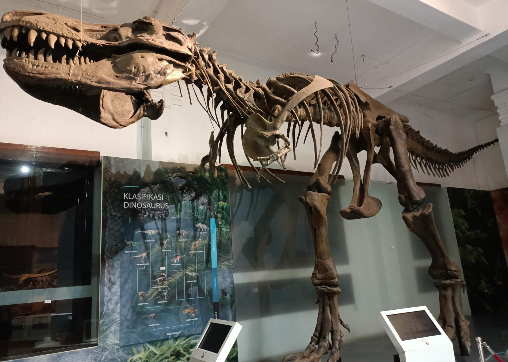

MUSEUM GEOLOGI BANDUNG
SEJARAH MUSEUM GEOLOGI
Gedung Museum Geologi dibangun pada 1928 dan diresmikan dengan nama "Geologische Museum" pada 16 Mei 1929 bertepatan dengan penyelenggaraan Kongres Ilmu Pengetahuan Pasifik yang ke IV.
Pembangunan dikerjakan selama 11 bulan dengan 300 pekerja dan menghabiskan dana 400.000 Gulden dibangun dengan arsitektur bergaya Art Deco berdasarkan rancangan arsitektur karya seorang arsitek Belanda,
Ir. H. Menalda van Schouwenburg.
Pada 2012 dilakukan revitalisasi ruang pamer Sumber Daya Geologi. Pengembangan yang dilakukan yaitu penambahan sistem tata pamer berupa sarana multimedia.
Tahun 2013 Pengembangan ruang pameran Manfaat dan Bencana Geologi. Selain media pamer berupa poster dan multimedia, juga dipasang simulator gempabumi. Tahun 2014 Pengembangan ruang pameran Geologi Indonesia.
Pada ruangan ini disajikan berbagai jenis batuan dari seluruh wilayah di Indonesia, mineral, hingga mineral ametis berukuran besar. Tahun 2020 dilakukan revitalisasi Ruang Pamer Sejarah Kehidupan.
Hasil revitalisasi ruangan ini adalah adanya penyegaran dari sisi storyline, tata penyajian dan strategi penyampaian informasi sesuai dengan kaidah permuseuman, yaitu wajib mengkaji ulang tata pamernya secara berkala.
KOLEKSI MUSEUM GEOLOGI
KOLEKSI LANGKA
BATUAN KORAL
 Terumbu karang dan batugamping yang terangkat menjadi daratan akan mengalami pelapukan dan erosi kikis yang disebut sebagai proses karstifikasi. Di bagian permukaan, proses tersebut menghasilkan berbagai bentukan yang disebut sebagai eksokars.
Melalui rekahan yang ada, air melarutkan tubuh batuan tersebut menghasilkan berbagai bentuk rongga-rongga serta mengendapkan larutannya menghasilkan berbagai bentuk ornamen yang disebut sebagai endokars. Kawasan kars mempunyai karakteristik tersendiri,
tergantung pada faktor-faktor yang mempengaruhi curah hujan dan iklim, jenis dam sifat batugamping, struktur geologi, lamanya waktu proses berlangsung, porositas batuan atau kemampuan batuan menerap air, kerapatan vegetasi penutup dan tebal tipisnya lapisan tanah.
Di Indonesia banyak fenomena kars yang terbentuk akibat fakto-faktor tersebut. Beberapa contoh kawasan kars di Indonesia adalah kawasan Maros-Pangkep, Rajamandala, Gunung Sewu, Kars Gombong, dan lain-lain.
Terumbu karang dan batugamping yang terangkat menjadi daratan akan mengalami pelapukan dan erosi kikis yang disebut sebagai proses karstifikasi. Di bagian permukaan, proses tersebut menghasilkan berbagai bentukan yang disebut sebagai eksokars.
Melalui rekahan yang ada, air melarutkan tubuh batuan tersebut menghasilkan berbagai bentuk rongga-rongga serta mengendapkan larutannya menghasilkan berbagai bentuk ornamen yang disebut sebagai endokars. Kawasan kars mempunyai karakteristik tersendiri,
tergantung pada faktor-faktor yang mempengaruhi curah hujan dan iklim, jenis dam sifat batugamping, struktur geologi, lamanya waktu proses berlangsung, porositas batuan atau kemampuan batuan menerap air, kerapatan vegetasi penutup dan tebal tipisnya lapisan tanah.
Di Indonesia banyak fenomena kars yang terbentuk akibat fakto-faktor tersebut. Beberapa contoh kawasan kars di Indonesia adalah kawasan Maros-Pangkep, Rajamandala, Gunung Sewu, Kars Gombong, dan lain-lain.
TYRANNOSAURUS REX

Tyrannosaurus rex atau T-rex yang terdapat di ruang sejarah kehidupan, merupakan icon favorit pengunjung untuk berfoto. T-rex termasuk tipe koleksi fosil fertebrata. Dengan memiliki tinggi 6,5 meter, panjang 14 meter, dan berat mencapai 8 ton, yaitu dinosaurus pemakan daging terbesar da terbuas yang paling terkenal pada zamannya.
Fosil yang menjadi salah satu koleksi unggulan ini adalah "replika" karena lokasi habibatnya tersebar di kawasan Amerika Utara dan sekitarnya, dan pada sat itu Indonesia belum terangkat meniadi sebuah daratan. T-rex ini berumur Kapur yang berkisar 145-65 juta tahun yang lalu. Enam puluh lima juta tahun yang lalu, masa-masa buruk telah menimpa hampir semua kawanan dinosaurus.
Mereka telah punah, termasuk si T-Rex predator raksasa. Bukti fosil dari jenis yang kecil seperti Nyasasaurus yang hanya sebesar anjing dari Tanzania, hingga yang besar seperti Supersaurus dari Amerika, menunjukkan bahwa reptil raksasa ini adalah fauna penguasa bumi yang beragam dan tak akan habis misterinya untuk diungkap.
GAJAH BLORA
 Gajah blora merupakan temuan yang spektakuler, sekitar 85% foil dari satu individu gajah in secara utuh ditemukan oleh tim ahli dari museum geologi yang dipimpin oleh Iwan Kurniawan dengan anggota Fachroel Aziz, Sidarto, Erick Setyabudi, dan Dadang, dalam suatu survei di tepian Bengawan Solo purba, Dusun Sunggun, Desa Mendalem, Kecamatan Kradenan, Kabupaten Blora, Provinsi Jawa Tengah pada tahun 2009.
Ekskavasi dilakukan pada November 2009 oleh tim yang bekerja sama dengan tim dari Dinas Pariwisata Kabupaten Blora dan Wollongong University (Gert Van den Bergh dan Mike Morwood). Proses ekskavasi, preparasi, rekonstruksi, hingga peragaan fosil tersebut memakan waktu sekitar empat tahun. Gajan yang berjenis kelamin jantan dan memiliki tinggi sekitar empat meter, panjangnya lima meter, dan berat 6-8 ton ini hidup sekitar 165.000 tahun yang lalu,
dan mati pada umur 49 tahun. Nama ilmiahnya adalah Elephas hysudrindicus, dan dianggap sebagai leluhur gajah Asia.
Gajah blora merupakan temuan yang spektakuler, sekitar 85% foil dari satu individu gajah in secara utuh ditemukan oleh tim ahli dari museum geologi yang dipimpin oleh Iwan Kurniawan dengan anggota Fachroel Aziz, Sidarto, Erick Setyabudi, dan Dadang, dalam suatu survei di tepian Bengawan Solo purba, Dusun Sunggun, Desa Mendalem, Kecamatan Kradenan, Kabupaten Blora, Provinsi Jawa Tengah pada tahun 2009.
Ekskavasi dilakukan pada November 2009 oleh tim yang bekerja sama dengan tim dari Dinas Pariwisata Kabupaten Blora dan Wollongong University (Gert Van den Bergh dan Mike Morwood). Proses ekskavasi, preparasi, rekonstruksi, hingga peragaan fosil tersebut memakan waktu sekitar empat tahun. Gajan yang berjenis kelamin jantan dan memiliki tinggi sekitar empat meter, panjangnya lima meter, dan berat 6-8 ton ini hidup sekitar 165.000 tahun yang lalu,
dan mati pada umur 49 tahun. Nama ilmiahnya adalah Elephas hysudrindicus, dan dianggap sebagai leluhur gajah Asia.
BATU BARA
 Batubara berwarna coklat gelap hingga hitam, mengkilap, keras, kompak, dan terasa ringan dibandingkan batuan sedimen lainnya. Batubara terbagi menjadi beberapa jenis berdasarkan derajat pembentukan dan kandungan kalorinya, diawali dari gambut, lignit, bituminus, dan paling tinggi adalah antrasit. Kandungan karbon paling tinggi ada pada antrasit (93-98%). Batubara merupakan batuan sedimen organik yang terbentuk dari pengenda-pan material sisa-sisa tumbuhan
yang telah mengalami tekanan dan pemanasan. Batuan ini biasanya terbentuk di lingkungan rawa dan danau. Batubara dimanfaatkan terutama sebagai sumber energi foil untuk pembangkit listrik tenaga uap (PLTU), industri baja, industri karet sintetis, pewarnaan, serta berbagai pemanfaatan lainnya.
Batubara berwarna coklat gelap hingga hitam, mengkilap, keras, kompak, dan terasa ringan dibandingkan batuan sedimen lainnya. Batubara terbagi menjadi beberapa jenis berdasarkan derajat pembentukan dan kandungan kalorinya, diawali dari gambut, lignit, bituminus, dan paling tinggi adalah antrasit. Kandungan karbon paling tinggi ada pada antrasit (93-98%). Batubara merupakan batuan sedimen organik yang terbentuk dari pengenda-pan material sisa-sisa tumbuhan
yang telah mengalami tekanan dan pemanasan. Batuan ini biasanya terbentuk di lingkungan rawa dan danau. Batubara dimanfaatkan terutama sebagai sumber energi foil untuk pembangkit listrik tenaga uap (PLTU), industri baja, industri karet sintetis, pewarnaan, serta berbagai pemanfaatan lainnya.
KERANG RAKSASA
 Tridacna gigas Linnaeus merupakan fosil yang hidup diantara terumbu karang pada lingkungan laut dangkal (neritik), dimana sinar matahari masih bisa masuk sampai dasar laut. Diperkirakan fosil ini berumur Oligosen akhir - Miosen awal pada formasi Rajamandala di Padalarang. Termasuk kedalam tipe koleksi Fosil Invertebrata yang berdimensi 99 x 63 x 50 cm. Fosil ini ditemukan di Padalarang, Jawa Tengah.
Tridacna gigas Linnaeus merupakan fosil yang hidup diantara terumbu karang pada lingkungan laut dangkal (neritik), dimana sinar matahari masih bisa masuk sampai dasar laut. Diperkirakan fosil ini berumur Oligosen akhir - Miosen awal pada formasi Rajamandala di Padalarang. Termasuk kedalam tipe koleksi Fosil Invertebrata yang berdimensi 99 x 63 x 50 cm. Fosil ini ditemukan di Padalarang, Jawa Tengah.
AMETIS
Ametis merupakan salah satu varian mineral kuarsa yang berwarna ungu. Komposisi mineral ini adalah Si02, memiliki tingkat kekerasan 7, sistem kristal heksagonal dan tidak memiliki belahan. Mineral ini bisa terbentuk dari kristalisasi magma di batuan beku plutonik dan hipabisal, batuan volkanik, serta dari pegmatit-pneumatolitik hingga larutan hidrotermal bertemperatur rendah dalam bentuk vein.
Warna ungunya berasal unsur pengotor besi, dan akan berubah menjadi putih ketika dipanaskan pada 300 Celcius dan kuning pada 500 Celcius, dan akan kembali meniadi ungu ketika ditembak oleh sinar X atau dibombardir dengan partikel alfa. Karena bentuk dan warnanya yang indah, serta kekerasannya yang cukup tinggi, ametis sering dimanfaatkan sebagai batumulia.
RUANG MUSEUM GEOLOGI
RUANG PAMER
Sejarah Kehidupan
 Ruangan ini menggambarkan perkembangan kehidupan di muka bumi yang dimulai sejak kelahiran bumi 4,6 milyar tahun yang lalu, terbentuk litosfer, atmosfer, dan hidrosfer sekitar 3,8 milyar tahun yang lalu, munculnya kehidupan awal berupa mikro-organisme sejenis ganggang dan bakteri sekitar 3,5 milyar tahun yang lalu yang diwakili oleh fosil tertua, yaitu Stromatolit.
Kemudian ditampilkan pula perkembangan kehidupan dari zaman ke zaman, mulai dari kehidupan di dalam air hingga migrasi ke darat, mulai dari organisme bersel satu hingga organisme bersel banyak, mulai dari hewan invertebrata hingga vertebrata, mulai dari tumbuhan paku hingga tumbuhan berbunga. Ruangan ini juga menginformasikan tentang sejarah geologi Bandung yang mengisahkan
terbentuknya Danau Bandung Purba serta memajang berbagai replika fosil manusia purba.
Ruangan ini menggambarkan perkembangan kehidupan di muka bumi yang dimulai sejak kelahiran bumi 4,6 milyar tahun yang lalu, terbentuk litosfer, atmosfer, dan hidrosfer sekitar 3,8 milyar tahun yang lalu, munculnya kehidupan awal berupa mikro-organisme sejenis ganggang dan bakteri sekitar 3,5 milyar tahun yang lalu yang diwakili oleh fosil tertua, yaitu Stromatolit.
Kemudian ditampilkan pula perkembangan kehidupan dari zaman ke zaman, mulai dari kehidupan di dalam air hingga migrasi ke darat, mulai dari organisme bersel satu hingga organisme bersel banyak, mulai dari hewan invertebrata hingga vertebrata, mulai dari tumbuhan paku hingga tumbuhan berbunga. Ruangan ini juga menginformasikan tentang sejarah geologi Bandung yang mengisahkan
terbentuknya Danau Bandung Purba serta memajang berbagai replika fosil manusia purba.
Manfaat dan Bencana Geologi
 Proses geologi yang berlangsung sejak puluhan juta tahun yang lalu di Indonesia, secara langsung maupun tidak langsung menjadi anugerah, manfaat, dan bencana geologi bagi manusia. Ruang Pameran Manfaat dan Bencana Geologi menjelaskan tentang manfaat sumber daya geologi oleh manusia dan bencana geologi. Sudut pameran pemanfaatan sumber daya geologi menyajikan hasil pengolahan
sumber daya geologi oleh manusia dari masa ke masa. Sudut pameran bencana geologi menyajikan jenis-jenis bencana yaitu: gempabumi dan tsunami, letusan gunungapi, dan tanah longsor.
Proses geologi yang berlangsung sejak puluhan juta tahun yang lalu di Indonesia, secara langsung maupun tidak langsung menjadi anugerah, manfaat, dan bencana geologi bagi manusia. Ruang Pameran Manfaat dan Bencana Geologi menjelaskan tentang manfaat sumber daya geologi oleh manusia dan bencana geologi. Sudut pameran pemanfaatan sumber daya geologi menyajikan hasil pengolahan
sumber daya geologi oleh manusia dari masa ke masa. Sudut pameran bencana geologi menyajikan jenis-jenis bencana yaitu: gempabumi dan tsunami, letusan gunungapi, dan tanah longsor.
Sumber Daya Geologi
 Ruangan Sumber Daya Geologi adalah ruangan yang mengupas berbagai jenis potensi sumber daya mineral dan energi serta tanah. Sumber daya mineral meliputi berbagai jenis mineral logam dan non-logam, termasuk di dalamnya batu mulia. Sumber daya energi meliputi energi konvensional seperti minyak dan panas bumi. Sumber daya air khususnya air tanah merupakan potensi yang sangat dibutuhkan bagi kelangsungan hidup manusia.
Ruangan Sumber Daya Geologi adalah ruangan yang mengupas berbagai jenis potensi sumber daya mineral dan energi serta tanah. Sumber daya mineral meliputi berbagai jenis mineral logam dan non-logam, termasuk di dalamnya batu mulia. Sumber daya energi meliputi energi konvensional seperti minyak dan panas bumi. Sumber daya air khususnya air tanah merupakan potensi yang sangat dibutuhkan bagi kelangsungan hidup manusia.
Geologi Indonesia
 Ruangan yang meninformasikan tentang proses pembentukan bumi dalam tata surya keluarga matahari. Di sini ditampilkan koleksi meteroit dan tektit. Selanjutnya digambarkan tentang perkembangan kepulauan Indonesia sejak 50 juta tahun yang lalu hingga kondisinya sekarang menurut teori tektonik lempeng terkait dengan keberadaan kepualauan Indonesia diatnara 3 lempeng tektonik, yaitu Euarasia, Pasifik,
dan Indo-Australia yang menyebabkan terjadinya berbagai fenomena geologi seperti gempabumim tsunami, dan aktivitas gunungapi. Fenomena dan gejala geologi utama dari masing-masing pulau besar di Indonesia dijelaskan. Ruangan ini juga menampilkan berbagai jenis dan klasifikasi mineral maupun batuan dan cara mengenalnya.
Ruangan yang meninformasikan tentang proses pembentukan bumi dalam tata surya keluarga matahari. Di sini ditampilkan koleksi meteroit dan tektit. Selanjutnya digambarkan tentang perkembangan kepulauan Indonesia sejak 50 juta tahun yang lalu hingga kondisinya sekarang menurut teori tektonik lempeng terkait dengan keberadaan kepualauan Indonesia diatnara 3 lempeng tektonik, yaitu Euarasia, Pasifik,
dan Indo-Australia yang menyebabkan terjadinya berbagai fenomena geologi seperti gempabumim tsunami, dan aktivitas gunungapi. Fenomena dan gejala geologi utama dari masing-masing pulau besar di Indonesia dijelaskan. Ruangan ini juga menampilkan berbagai jenis dan klasifikasi mineral maupun batuan dan cara mengenalnya.
KONTAK DAN LOKASI